소방설비산업기사(전기) (2012-09-15 기출문제)
1과목: 소방원론
1. 공기 중의 산소는 용적으로 약 몇 % 정도 인가?
- 15
- 21
- 28
- 32
(정답률: 88%)

2. 산소의 공급이 원활하지 못한 화재실에 급격히 산소가 공급이 될 경우 순간적으로 연소하여 화재가 폭풍을 동반하여 실외로 분출하는 현상은?
- 후래쉬 오버
- 보일 오버
- 백 드래프트
- 슬롭 오버
(정답률: 79%)
3. 제3류 위험물 중 금수성 물질에 해당하는 것은?
- 유황
- 탄화칼슘
- 황린
- 이황화탄소
(정답률: 64%)
4. 불타고 있는 유루화재 표면을 포소화약제로 덮어 소화하는 주된 소화법은?
- 냉각소화
- 질식효과
- 연료제거 소화
- 연쇄반응차단 소화
(정답률: 83%)
5. 안전을 위해서 물속에 저장하는 물질은?
- 나트륨
- 칼륨
- 이황화탄소
- 과산화나트륨
(정답률: 79%)
6. 연소범위에 대한 설명 중 틀린 것은?
- 연소범위에는 상한값과 하한값이 있다
- 온도가 올라가면 연소범위는 넓어진다.
- 연소범위가 좁을수록 폭발의 위험이 크다
- 연소범위는 압력의 영향을 받는다.
(정답률: 79%)
7. 건축물의 주요 구조부에 해당하는 것은?
- 작은 보
- 옥외 계단
- 지붕틀
- 최하층 바닥
(정답률: 78%)
8. 코크스의 일반적인 연소형태에 해당하는 것은?
- 분해연소
- 증발연소
- 표면연소
- 자기연소
(정답률: 81%)
9. 가연물이 서서히 산화되는 축적된 열에 의해 발화하는 현상을 무엇이라 하는가?
- 분해연소
- 자기연소
- 자연발화
- 폭굉
(정답률: 69%)
10. 점화원이 될 수 없는 것은?
- 충격마찰
- 대기압
- 정전기불꽃
- 전기불꽃
(정답률: 93%)
11. LPG 의 특성 중 옳지 않은 것은?
- 기체 비중이 공기보다 무겁다.
- 순수한 LPG 는 강한 자극적 냄새를 가지고 있다.
- 상온,상압에서 기체이다
- 액체상태의 LPG가 기화하면 체적이 증가한다.
(정답률: 65%)
12. 제3종 분말소화약제의 주성분에 해당하는 것은?
- NH4H2PO4
- HaHCO3
- KHCO3+(NH2)2CO
- KHCO3
(정답률: 88%)
13. 표준상태에서 44.8m3 의 용적을 가진 이산화탄소가스를 모두 액화하면 몇 ㎏ 인가?
- 88
- 44
- 22
- 11
(정답률: 49%)
14. B급 화재에 해당하지 않는 것은?
- 목탄의 연소
- 등유의 연소
- 아마인유의 연소
- 알코올류의 연소
(정답률: 90%)
15. 다음 중 제4류 위험물이 아닌 것은?
- 가솔린
- 메틸알코올
- 아닐린
- 트리니트로톨루엔
(정답률: 73%)
16. 이산화탄소가 소화약제로 사용되는 장점으로 옳지 않은 것은?
- 단위 부피당의 무게가 공기보다 가볍다.
- 화학적으로 안정된 물질이다
- 불연성이다.
- 전기 절연성이다.
(정답률: 67%)
17. 인화점(flash point)을 가장 옳게 설명한 것은?
- 가연성 액체가 증기를 계속 발생하여 연소가 지속될 수 있는 최저온도
- 가연성 증기 발생시 연소범위의 하한계에 이르는 최저온도
- 고체와 액체가 평행을 유지하며 공존할 수 있는 온도
- 가연성 액체의 포화증기압이 대기압과 같아지는 온도
(정답률: 72%)
18. 0℃ 얼음의 용융잠열과 100℃ 물의 증발잠열을 옳게 나타낸 것은?
- 1㎈/g, 22.4㎈/g
- 1㎈/g, 539㎈/g
- 80㎈/g, 22.4㎈/g
- 80㎈/g, 539㎈/g
(정답률: 72%)
19. 물과 반응하여 가연성인 아세틸렌 가스를 발생시키는 것은?
- 칼슘
- 아세톤
- 마그네슘
- 탄화칼슘
(정답률: 74%)
20. 장기간 방치하면 습기, 공온 등에 의해 분해가 촉진되고, 분해열이 축적되면 자연방화 위험성이 있는 것은?
- 셀롤로이드
- 질산나트륨
- 과망간산칼륨
- 과염소산
(정답률: 89%)
2과목: 소방전기회로
21. 그림과 같은 회로에서 소비되는 전력은 몇 [w] 인가?
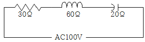
- 60[W]
- 90[W]
- 120[W]
- 150[W]
(정답률: 61%)
22. 다음 중 변압기 여자 전류에 가장 많이 포함된 고조파는?
- 제2고조파
- 제3고조파
- 제4고조파
- 제5고조파
(정답률: 79%)
23. 회로에서 전류 I 의 값은 몇 [A] 인가?
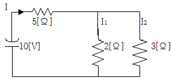
- 약 0.96[A]
- 약 1.61[A]
- 약 1.82[A]
- 약 1.94[A]
(정답률: 69%)
24. 전류의 열작용과 관계가 있는 법칙은?
- 키르히호프의 법칙
- 줄의 법칙
- 플레밍의 법칙
- 옴의 법칙
(정답률: 83%)
25. 다음 심벌의 명칭은?
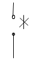
- 열동 과전류계전기 접점
- 수동 접점(토글스위치)
- 기계적 접점(리미트 스위치)
- 계전기 접점
(정답률: 68%)
26. 다음 중 강자성체인 것은?
- 금
- 니켈
- 알루미늄
- 구리
(정답률: 77%)
27. 세 변의 저항 Ra=Rb=Rc=15[Ω]인 Y결선 회로가 있다. 이것과 대응한 △결선 회로의 각 변의 저항 [Ω]은?
- 5[Ω]
- 10[Ω]
- 25[Ω]
- 45[Ω]
(정답률: 49%)
28. 25[mH]와 100[mH]의 두 인덕턴스가 병렬로 연결되어 있다. 합성 인덕턴스는 몇 [mH] 인가?
- 20[mH]
- 40[mH]
- 75[mH]
- 85[mH]
(정답률: 57%)
29. 인덕턱스의 측정에 사용되는 브리지의 종류가 아닌 것은?
- 맥스웰 브리지(Maxwell Bridge)법
- 셰링 브리지(Schering Bridge)법
- 헤비사이드 브리지(Heaviside Bridge)법
- 헤비 브리지(Hay Bridge)법
(정답률: 55%)
30. 정류가 흐르고 있는 도체에 자계를 가하면 도체 측면에는 정부의 전하가 나타나 두 면 간의 전위차가 발생하는 현상은?
- 홀효과
- 톰슨효과
- 핀치효과
- 제벡효과
(정답률: 53%)
31. 그림에서 c,d점 사이의 전위차[V]는?
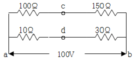
- 15[V]
- 30[V]
- 45[V]
- 60[V]
(정답률: 53%)
32. 계자권선이 전기자에 병렬로만 연결되어 있는 직류기는 어느 것인가?
- 직권기
- 복권기
- 분권기
- 타여자기
(정답률: 68%)
33. 그림과 같은 회로에서 전전류 I 는 몇 [A] 인가?
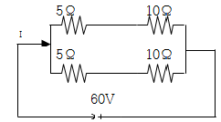
- 4[A]
- 6[A]
- 8[A]
- 12[A]
(정답률: 80%)
34. 어떤 회로 소자에 전압을 가했더니 흐르는 전류가 인가한 전압과 동일한 위상이었다. 이회로 소자는?
- 커패시턴스
- 인덕턴스
- 서셉턴스
- 저항
(정답률: 61%)
35. 내부저항이 무한대인 전압계로 그림 A-B간의 전압을 측정하면 몇 [V] 인가?
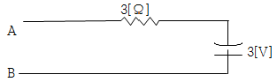
- 0[V]
- 1.0[V]
- 1.5[V]
- 3[V]
(정답률: 61%)
36. 전원에 저항이 각각 R[Ω]인 저항을 △ 결선으로 접속시킬 때와 Y결선으로 접속시킬 때, 선전류의 비는?
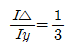
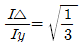
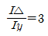
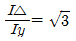
(정답률: 52%)
37. m[Wb]의 자극을 자장의 세기가 H[AT/m]인 곳에 놓았을 때 작용하는 힘 F는 몇[N] 인가?
- F=mH
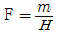
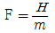
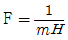
(정답률: 66%)
38. 평행판 콘덴서에서 판사이의 거리를 1/2로 하고 판의 면적을 2배로 하면 그 정전용량은 어떻게 되는가?
- 1/4로 된다.
- 1/2로 된다.
- 4배로 된다.
- 8배로 된다.
(정답률: 84%)
39. 제어요소의 동작 중 연속동작이 아닌 것은?
- P동작
- PD 동작
- PI 동작
- ON-OFF 동작
(정답률: 88%)
40. 인가전압을 변화시켜서 전동기의 회전수를 800[rpm]으로 하고자 한다. 이 경우에 회전수는 어느 용어에 해당되는가?
- 목표값
- 기준값
- 조작량
- 제어량
(정답률: 51%)
3과목: 소방관계법규
41. 소방안전관리대상물의 관계인이 소방안전관리자를 선임한때에는 선임한 날부터 며칠 이내에 관할 소방본부장 또는 소방서장에게 신고하여야 하는가?
- 7일
- 14일
- 21일
- 30일
(정답률: 67%)
42. 소화설비, 경보설비, 피난설비, 소화용수설비, 소화활동설비 등을 총칭하는 용어로 규정된 것은?
- 방화시설
- 소방시설
- 소화시설
- 방재시설
(정답률: 73%)
43. 소방력(消防力)의 기준에 관한 사항으로 옳지 않은 것은?
- 소방기관이 소방업무를 수행하는데 필요한 인력과 장비 등에 관한 기준이다.
- 소방본부장은 관할구역 내의 소방력 확충을 위하여 필요한 계획을 수립 시행한다.
- 소방자동차 등 소방장비의 분류·표준화와 그 관리에 관한 사항이 포함된다.
- 소방력의 기준은 행정안전부령으로 정한다.
(정답률: 43%)
44. 다음 중 2급 소방안전관리대상물의 소방안전관리자의 선임대상으로 부적합한 것은?
- 위험물산업기사 또는 위험물기능사 자격을 가진 사람
- 소방공무원으로 3년 이상 근무한 경력이 있는 사람
- 경찰공무원으로 2년 이상 근무한 경력이 있는 사람
- 산업안전산업기사 또는 전기산업기사 자격을 가진 사람
(정답률: 77%)
45. 소방시설설치유지 및 안전관리에 관한 법률시행령에서 규정하는 소방용품 중 소화설비를 구성하는 제품 또는 기기에 해당하지 않는 것은?
- 방염제
- 수동식 소화기
- 소방호스
- 송수구
(정답률: 58%)
46. 상주 공사감리를 하여야 하는 특정소방대상물의 일반적인 연면적 기준은? (단, 아파트는 제외한다.)
- 연면적 5000[m2]이상
- 연면적 1만[m2]이상
- 연면적 2만[m2]이상
- 연면적 3만[m2]이상
(정답률: 49%)
47. 다음 중 경보설비에 해당하는 것은?
- 무선통신보조설비
- 비상방송설비
- 비상콘센트설비
- 연소방지설비
(정답률: 79%)
48. 다음 중 개구부에 관한 사항으로 옳지 않은 것은?
- 개구부의 크기가 반지름 30[㎝]이상의 원이 내접할 수 있을 것
- 해당 층의 바닥면적으로부터 개구부 밑부분까지 높이가 1.2[m]이내일 것
- 개구부는 도로 또는 차량의 진입이 가능한 빈터를 향할 것
- 화재시 건축물로부터 쉽게 피난할 수 있도록 창살 그 밖의 장애물이 설치되어 있지 않을 것
(정답률: 72%)
49. 소방시설업(설계, 감리업 등)에 대한 설명으로 옳은 것은?
- 등록사항의 변경은 소방본부장 또는 소방서장에게 한다.
- 감리결과의 보고는 소방본부장 또는 소방서장에게 공사가 완료된 날로부터 30일 이내에 하여야 한다
- 소방감리업자가 등록이 취소된 경우에는 그 처분 내용을 지체 없이 발주자에게 통보하여야 한다.
- 소방시설의 구조 및 원리 등에서 공법 등에서 특수한 설계인 경우 한국소방산업기술원에 심의를 요청한다.
(정답률: 58%)
50. 소방기본법상 도시의 건물밀집지역 등 화재가 발생할 우려가 높은 지역을 화재경계지구로 지정할 수 있는 사람은로 옳은 것은?
- 소방방재청장
- 소방본부장 또는 소방서장
- 행정안전부장관
- 시·도지사
(정답률: 69%)
51. 소방시설공사업자가 착공신고한 사항 가운데 중요한 사항이 변경된 경우에 변경신고서를 소방서장 또는 소방본부장에게 변경일로부터 며칠 이내에 신고하여야 하는가?
- 30일
- 14일
- 10일
- 7일
(정답률: 36%)
52. 제4류 위험물의 적응 소화설비와 가장 거리가 먼 것은?
- 옥내소화전설비
- 물분무소화설비
- 포소화설비
- 할로겐화합물소화설비
(정답률: 48%)
53. 다음의 특정소방대상물 중 근린생활시설에 해당되는 것은?
- 바닥면적의 합계가 1500[m2]인 슈퍼마켓
- 바닥면적의 합계가 1200[m2]인 자동차영업소
- 바닥면적의 합계가 450[m2]인 골프연습장
- 바닥면적의 합계가 400[m2]인 공연장
(정답률: 67%)
54. 소방안전교육사의 배치 대상별 배치기준으로 옳지 않은 것은?
- 소방방재청 : 2명 이상 배치
- 소방본부 : 2명 이상 배치
- 소방서 : 1명 이상 배치
- 한국소방안전협회(본회) : 1명 이상 배치
(정답률: 64%)
55. 소방안전교육사가 수행하는 소방안전교육의 업무에 직접적으로 해당되지 않는 것은?
- 소방안전교육의 분석
- 소방안전교육의 기획
- 소방안전관리자 양성교육
- 소방안전교육의 평가
(정답률: 67%)
56. 다음 중 화재의 조사에 대한 내용 중 틀린 것은?
- 소방공무원과 국가경찰공무원은 화재조사를 할 때에는 서로 협력하여야 한다.
- 소방방재청장, 소방본부장, 소방서장은 화재가 발생한 때에는 화재의 원인 및 피해 등에 대한 조사를 하여야 한다.
- 소방방재청장은 수사기관이 방화 또는 실화의 혐의가 있어서 증거물을 압수한 때에는 화재조사를 위하여 압수된 증거물에 대한 조사를 할 수 있다.
- 화재조사의 방법 및 전담조사반의 운영과 화재조사자의 자격 등 화재조사에 관하여 필요한 사항은 대통령령으로 정한다.
(정답률: 60%)
57. 다음 중 종합정밀점검 점검자의 자격에 해당되지 않는 것은?
- 소방시설관리사가 선임된 소방시설관리사
- 소방안전관리자로 선임된 소방시설관리사
- 소방안전관리자로 선임된 소방기술사
- 소방안전관리자로 선임된 소방설비기사
(정답률: 56%)
58. 다음 중 과태료 부과 대상이 아닌 것은?
- 소방안전관리자를 선임하지 아니한 자
- 소방훈련 및 교육을 실시하지 아니한 자
- 피난시설, 방화구획 또는 방화시설의 패쇄·훼손변경 등의 행위를 한자
- 소방시설 등의 점검결과를 보고하지 아니한 자
(정답률: 45%)
59. 일반음식점에서 음식조리를 위해 불을 사용하는 설비를 설치하는 경우 지켜야 하는 사항으로 옳지 않은 것은?
- 주방시설에 동물 또는 식물의 기름을 제거할 수 있는 필터를 설치하였다.
- 열이 발생하는 조리기구를 선반으로부터 0.6[m]떨어지게 설치하였다.
- 주방설비에 부속된 배기닥트 재질을 0.2[mm] 아연도금 강판으로 사용하엿다.
- 가연성 주요 구조부를 단열성이 있는 불연 재료로 덮어씌웠다.
(정답률: 66%)
60. 소방시설 등록사항의 변경시 시.도지사에게 신고해야 할 사항이 아닌 것은?
- 명칭·상호 또는 영업소의 소재지 변경
- 자산규모 변경
- 기술인력 변경
- 대표자 변경
(정답률: 66%)
4과목: 소방전기시설의 구조 및 원리
61. 누전경보기의 전원과 관련된 내용 중 틀린 것은?
- 전원은 분전반으로부터 전용회로로 하여야 한다.
- 배선용 차단기에 있어서는 20[A]이하의 것으로 각극을 개폐할 수 있어야 한다.
- 각극에 개폐기 및 15[A]이하의 과전류차단기를 설치하여야 한다.
- 전원을 분기할 때에는 다른 차단기에 따라 전원이 동시에 차단되어야 한다.
(정답률: 79%)
62. 소방시설용 비상전원수전설비에서 소방회로 전용의 것으로서 분기 개폐기, 분기 과전류차단기, 그 밖의 배선용기기 및 배선을 금속제 외함에 수납한 것은?
- 전용분전반
- 전용배전반
- 공용배전반
- 전용수전반
(정답률: 72%)
63. 비상방송설비의 확성기를 실내에 설치하는 경우 음성입력은 최소 몇 [W] 이상이여야 하는가?
- 1[W]
- 2[W]
- 3[W]
- 4[W]
(정답률: 84%)
64. 비상벨설비 또는 자동식사이렌설비에는 그 설비에 대한 감시상태를 몇 분간 지속한 후 유효하게 10분 이상 경보 할 수 있는 축전지설비를 설치하여야 하는가?
- 10분
- 60분
- 20분
- 30분
(정답률: 81%)
65. 다음은 유도등 설치에 관한 설명이다. 틀린 것은?
- 객석유도등은 객석의 통로, 바닥, 벽, 천장에 설치하여야 한다.
- 객석유도등의 조도는 통로바닥의 중심선의 0.5[m] 높이에서 측정하여 0.2[lx]이상이여야 한다.
- 복도통로 유도등은 구부런진 모퉁이 및 보행거리 20[m] 마다 설치하여야 한다.
- 피난구유도등은 피난구의 바닥으로부터 높이 1.5[m]이상의 곳에 설치하여야 한다.
(정답률: 66%)
66. 누전경보기의 기능 중 누설 전류를 유기한 변류기의 미소전압을 수신하여 증폭시켜 주는 역할을 하는 것은?
- 경보장치
- 수신기
- 차단릴레이
- 음향장치
(정답률: 74%)
67. 보상식 스프트형 감지기의 작동시험으로 옳지 않은 것은?(오류 신고가 접수된 문제입니다. 반드시 정답과 해설을 확인하시기 바랍니다.)
- 1종인 경우에는 실온보다 20℃ 높은 온도이고 풍속이 70[㎝/sec]인 수직기류에 투입하는 경우 30초 이내에 작동하여야 한다.
- 2종인 경우에는 실온보다 30℃ 높은 온도이고 풍속이 85[㎝/sec]인 수직기류에 투입하는 경우 4.5분 이내에 작동하여야 한다.
- 1종인 경우에는 실온에서부터 매분 10℃의 직선적인 비율로 상승하는 수평기류에 투입하는 경우 4.5분 이내에 작동하여야 한다.
- 2종인 경우에는 실온에서부터 매분 20℃의 직선적인 비율로 상승하는 수평기류에 투입하는 경우 4.5분 이내에 작동하여야 한다.
(정답률: 28%)
68. 발신기의 설치기준으로 적합하지 않는 것은?
- 특정소방대상물의 층마다 설치하되, 해당 소방대상물의 각 부분으로부터 하나의 발신기까지의 수평거리가 30[m]이하가 되도록 한다.
- 스위치는 바닥으로부터 0.8[m]이상 1.5[m]이하의 높이에 설치한다.
- 복도 또는 별도로 구획된 실로서 보행거리가 40[m]이상일 경우에는 추가로 설치하여야 한다.
- 지하구에는 발신기를 설치하지 아니 할 수 있다.
(정답률: 67%)
69. 휴대용 비상조명등의 기준에 적합하지 않은 것은?
- 외함은 난연성능이 있을 것
- 사용 시 자동으로 점등되는 구조일 것
- 건전지를 사용하는 경우 상시 충전되도록 할 것
- 어둠 속에서 위치를 확인할 수 있도록 할 것
(정답률: 63%)
70. 기존건축물이 증축·개축되는 경우 당해 건축물에 설치하여야 할 자동화재속보설비 중 어떤 내용의 공사가 현저하게 곤란하다고 인정되는 경우 특례기준을 적용할 수 있는가?
- 난방공사
- 피난설비공사
- 방화설비공사
- 배관.배선공사
(정답률: 60%)
71. 비상콘센트에 비상전원을 실내에 설치할 경우 그 실내에 무엇을 설치하는가?
- 유도등
- 휴대용비상조명등
- 실내조명등
- 비상조명등
(정답률: 78%)
72. 다음 중 감지기를 설치하여야 하는 장소는?(관련 규정 개정전 문제로 여기서는 기존 정답인 2번을 누르면 정답 처리됩니다. 자세한 내용은 해설을 참고하세요.)
- 실내의 용적이 20[m3]이하인 장소
- 천장 또는 반자의 높이가 10[m]이하인 장소
- 목욕실 욕조나 샤워시설이 있는 화장실
- 부식성가스가 체류하고 있는 장소
(정답률: 38%)
73. 주요구조부를 내화구조로 한 소방대상물에 정온식 스포트형 감지기 1종을 설치하려고 한다. 몇 개 이상 설치하여야 하는가? (단, 부착높이는 2.7[m]이고, 바닥면적은 600[m2]이다.)
- 4개
- 9개
- 10개
- 14개
(정답률: 50%)
74. 비상방송설비의 음향장치는 정격전압의 몇% 전압에서 음향을 발할 수 있는 것으로 하여야 하는가?
- 50%
- 60%
- 70%
- 80%
(정답률: 86%)
75. 교차회로방식의 감지기가 아닌 경우일 때 연기감지기를 반드시 설치하여야 하는 장소가 아닌 것은?
- 계단의 길이가 25[m]인 경우
- 복도의 길이가 20[m]인 경우
- 엘리베이터 권상기실
- 천장의 높이가 18[m]인 경우
(정답률: 35%)
76. 케이블트레이에 정온식감지선형 감지기를 설치하는 경우에는 케이블트레이 받침대에 무엇을 이용하여 감지선을 설치해야 하는가?
- 보조선
- 접착제
- 마감금구
- 단자부
(정답률: 77%)
77. 통로유도등을 바닥에 매설시 조도 기준으로 옳은 것은?
- 유도등 직상부 0.5[m]의 높이에서 측정하여 1[lx]이상
- 유도등 직상부 0.5[m]의 높이에서 측정하여 2[lx]이상
- 유도등 직상부 1[m]의 높이에서 측정하여 1[lx]이상
- 유도등 직상부 1[m]의 높이에서 측정하여 2[lx]이상
(정답률: 57%)
78. 비상방송설비의 설치기준에서 기동장치에 따른 화재신고를 수신한 후 필요한 음량으로 화재발생 상황 및 피난에 유요한 방송이 자동으로 개시될 때까지의 소요시간은 몇초 이하로 하는가?
- 5초
- 10초
- 15초
- 30초
(정답률: 83%)
79. 비상콘센트설비 교류전원회로의 공급용량 기준으로 옳은 것은?
- 단상 220[V] 1[KVA], 3상 380[V] 2[KVA] 이상
- 단상 220[V] 3[KVA], 3상 380[V] 1.5[KVA] 이상
- 단상 220[V] 1.5[KVA], 3상 380[V] 3[KVA] 이상
- 단상 220[V] 1.5[KVA], 3상 380[V] 1.5[KVA] 이상
(정답률: 65%)
80. 비상콘세트설비에 사용되는 자가발전설비는 몇 분 이상 작동이 가능하여야 하는가?
- 10분
- 15분
- 20분
- 25분
(정답률: 80%)